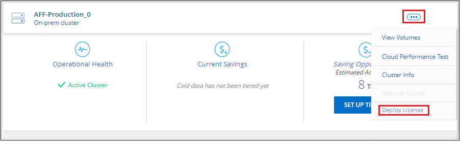

Dokumentationsänderungen beantragen
Dokumentationsänderungen beantragen In GitHub bearbeiten
In GitHub bearbeiten Leitfaden für Beitragende
Leitfaden für BeitragendeLizenzierung für Cloud Tiering einrichten
Beitragende
Eine kostenlose 30-Tage-Testversion von Cloud Tiering wird gestartet, wenn Sie Tiering über den ersten Cluster einrichten. Nach Ablauf der kostenlosen Testversion müssen Sie für Cloud Tiering über ein Pay-as-you-go- oder ein Jahresabonnement vom Markt Ihres Cloud-Providers, eine BYOL-Lizenz von NetApp oder eine Kombination von beiden bezahlen.
Ein paar Notizen, bevor Sie weitere lesen:
-
Wenn Sie bereits das BlueXP Abonnement (PAYGO) in Ihrem Cloud-Provider-Markt abonniert haben, haben Sie das Cloud Tiering automatisch auch von lokalen ONTAP Systemen abonniert. Im Reiter Cloud Tiering Licensing sehen Sie ein aktives Abonnement. Sie müssen sich nicht erneut anmelden.
-
Die BYOL Cloud Tiering Lizenz ist eine „Floating“-Lizenz, die Sie über mehrere ONTAP Cluster vor Ort in Ihrem BlueXP Konto hinweg verwenden können. Dies unterscheidet sich in der Vergangenheit, wo Sie für jeden Cluster eine FabricPool Lizenz erworben haben.
-
Beim Tiering von Daten in StorageGRID fallen keine Gebühren an. Daher ist keine BYOL-Lizenz oder eine PAYGO-Registrierung erforderlich. Diese Tiered Daten zählen nicht gegen die Kapazität, die in Ihrer Lizenz erworben wurde.
Nutzen Sie ein Cloud Tiering PAYGO-Abonnement
Mit Pay-as-you-go-Abonnements auf dem Markt Ihres Cloud-Providers können Sie die Nutzung von Cloud Volumes ONTAP Systemen und viele Cloud-Datenservices wie Cloud-Tiering lizenzieren.
Abonnieren im AWS Marketplace
Abonnieren Sie über den AWS Marketplace ein Cloud-Tiering, um ein Pay-as-you-go-Abonnement für Daten-Tiering von ONTAP-Clustern in AWS S3 einzurichten.
-
Klicken Sie in BlueXP auf Mobilität > Tiering > Lizenzierung.
-
Klicken Sie unter AWS Marketplace auf Abonnieren und dann auf Weiter.
-
Melden Sie sich beim an "AWS Marketplace", Und melden Sie sich dann wieder auf der BlueXP Website, um die Registrierung abzuschließen.
Das folgende Video zeigt den Prozess:
Abonnieren im Azure Marketplace
Abonnieren Sie Cloud Tiering über den Azure Marketplace, um ein Pay-as-you-go-Abonnement für Daten-Tiering von ONTAP-Clustern in den Azure Blob-Storage einzurichten.
-
Klicken Sie in BlueXP auf Mobilität > Tiering > Lizenzierung.
-
Klicken Sie unter Azure Marketplace auf Abonnieren und dann auf Weiter.
-
Melden Sie sich beim an "Azure Marketplace", Und melden Sie sich dann wieder auf der BlueXP Website, um die Registrierung abzuschließen.
Das folgende Video zeigt den Prozess:
Abonnieren im GCP Marketplace
Über den GCP Marketplace können Sie Cloud Tiering abonnieren, um ein Pay-as-you-go-Abonnement für Daten-Tiering von ONTAP-Clustern in Google Cloud Storage einzurichten.
-
Klicken Sie in BlueXP auf Mobilität > Tiering > Lizenzierung.
-
Klicken Sie unter GCP Marketplace auf Abonnieren und dann auf Weiter.
-
Melden Sie sich beim an "GCP Marketplace", Und melden Sie sich dann wieder auf der BlueXP Website, um die Registrierung abzuschließen.
Das folgende Video zeigt den Prozess:
Verwenden Sie einen Jahresvertrag
Sie bezahlen jährlich mit Cloud-Tiering durch den Kauf eines Jahresvertrags.
Beim Tiering inaktiver Daten zu AWS können Sie einen jährlichen Vertrag von abonnieren "AWS Marketplace Seite". Und ist in 1-, 2- oder 3-Jahres-Laufzeiten erhältlich.
Wenn Sie diese Option verwenden möchten, richten Sie Ihr Abonnement auf der Marketplace-Seite ein und dann "Verbinden Sie das Abonnement mit Ihren AWS Zugangsdaten".
Jahresverträge werden derzeit nicht unterstützt, wenn Tiering zu Azure oder GCP.
Verwenden einer Cloud Tiering-BYOL-Lizenz
Mit den Bring-Your-Own-License-Lizenzen von NetApp erhalten Sie Vertragsbedingungen mit 1, 2 oder 3 Jahren. Die BYOL Cloud Tiering-Lizenz ist eine floating Lizenz, die Sie über mehrere ONTAP Cluster vor Ort in Ihrem BlueXP Konto hinweg verwenden können. Die in Ihrer Cloud Tiering Lizenz definierte Gesamtkapazität an Tiering wird von allen * Ihrer On-Prem-Cluster geteilt, was die Erstlizenzierung und Erneuerung vereinfacht.
Wenn Sie keine Cloud Tiering Lizenz haben, setzen Sie sich mit uns in Verbindung, um eine Lizenz zu erwerben:
-
Mailto:ng-cloud-tiering@netapp.com?Subject=Lizenzierung[E-Mail senden, um eine Lizenz zu erwerben].
-
Klicken Sie rechts unten auf das Chat-Symbol von BlueXP, um eine Lizenz anzufordern.
Wenn Sie optional eine nicht zugewiesene Node-basierte Lizenz für Cloud Volumes ONTAP haben, die Sie nicht verwenden werden, können Sie diese in eine Cloud Tiering-Lizenz mit derselben Dollaräquivalenz und demselben Ablaufdatum konvertieren. "Weitere Informationen finden Sie hier".
Sie verwenden die Seite „Digital Wallet“ in BlueXP, um BYOL-Lizenzen für Cloud Tiering zu verwalten. Sie können neue Lizenzen hinzufügen und vorhandene Lizenzen aktualisieren.
Neue BYOL-Lizenzierung von Cloud Tiering ab 21. August 2021
Die neue Cloud Tiering-Lizenz wurde im August 2021 für Tiering-Konfigurationen eingeführt, die in BlueXP mit dem Cloud Tiering Service unterstützt werden. BlueXP unterstützt derzeit Tiering auf folgenden Cloud-Storage: Amazon S3, Azure Blob Storage, Google Cloud Storage, S3-kompatibler Objekt-Storage und StorageGRID.
Die FabricPool-Lizenz, die Sie in der Vergangenheit für das Tiering von On-Premises-ONTAP-Daten in die Cloud verwendet haben, wird nur für ONTAP-Bereitstellungen in Websites gehalten, die keinen Internetzugang haben (auch als „dunkle Standorte“ bezeichnet), und für das Tiering von Konfigurationen in IBM Cloud-Objektspeicher. Wenn Sie diese Art der Konfiguration verwenden, installieren Sie eine FabricPool Lizenz auf jedem Cluster mithilfe von System Manager oder der ONTAP CLI.

|
Beachten Sie, dass für Tiering zu StorageGRID keine Lizenz für FabricPool oder Cloud Tiering erforderlich ist. |
Wenn Sie derzeit die FabricPool-Lizenzierung verwenden, sind Sie erst betroffen, wenn die FabricPool-Lizenz das Ablaufdatum oder die maximale Kapazität erreicht hat. Wenden Sie sich an NetApp, wenn Sie Ihre Lizenz aktualisieren müssen, oder an eine frühere Version, um sicherzustellen, dass die Möglichkeit des Tiering von Daten in die Cloud nicht unterbrochen wird.
-
Wenn Sie eine Konfiguration verwenden, die in BlueXP unterstützt wird, werden Ihre FabricPool-Lizenzen in Cloud Tiering-Lizenzen konvertiert, und diese werden im digitalen Wallet angezeigt. Nach Ablauf dieser anfänglichen Lizenzen müssen Sie die Cloud Tiering Lizenzen aktualisieren.
-
Wenn Sie eine Konfiguration verwenden, die in BlueXP nicht unterstützt wird, verwenden Sie weiterhin eine FabricPool-Lizenz. "Erfahren Sie, wie Sie für das Tiering mit System Manager lizenzieren".
Hier sind einige Dinge, die Sie über die beiden Lizenzen wissen müssen:
| Cloud-Tiering-Lizenz | FabricPool Lizenz |
|---|---|
Es handelt sich um eine „_Floating_Lizenz“, die Sie über mehrere ONTAP Cluster vor Ort hinweg verwenden können. |
Es handelt sich um eine Lizenz pro Cluster, die Sie für every Cluster erwerben und lizenzieren. |
Sie ist in BlueXP im Digital Wallet registriert. |
Er wird auf einzelne Cluster mithilfe von System Manager oder der ONTAP CLI angewendet. |
Die Konfiguration und das Management von Tiers erfolgt über den Cloud Tiering Service in BlueXP. |
Die Tiering-Konfiguration und das Management erfolgen über System Manager oder über die ONTAP CLI. |
Sobald Sie konfiguriert sind, können Sie den Tiering Service mit der kostenlosen Testversion 30 Tage lang ohne Lizenz verwenden. |
Nach der Konfiguration können Sie das Tiering der ersten 10 TB an Daten kostenlos durchführen. |
Holen Sie sich Ihre Cloud Tiering Lizenzdatei
Nachdem Sie Ihre Cloud Tiering-Lizenz erworben haben, aktivieren Sie die Lizenz in BlueXP, indem Sie die Seriennummer und das NSS-Konto für Cloud Tiering eingeben oder die Lizenzdatei für NLF hochladen. Die folgenden Schritte zeigen, wie Sie die Lizenzdatei NLF abrufen können, wenn Sie diese Methode verwenden möchten.
-
Melden Sie sich beim an "NetApp Support Website" Klicken Sie anschließend auf Systeme > Softwarelizenzen.
-
Geben Sie die Seriennummer der Cloud Tiering-Lizenz ein.

-
Klicken Sie unter Lizenzschlüssel auf NetApp Lizenzdatei erhalten.
-
Geben Sie Ihre BlueXP-Konto-ID ein (dies wird als Mandanten-ID auf der Support-Website bezeichnet) und klicken Sie auf Absenden, um die Lizenzdatei herunterzuladen.

Sie können Ihre BlueXP-Konto-ID finden, indem Sie oben in BlueXP das Dropdown-Menü Konto auswählen und dann neben Ihrem Konto auf Konto verwalten klicken. Ihre Account-ID wird auf der Registerkarte „Übersicht“ angezeigt.
Fügen Sie Byol-Lizenzen für Cloud Tiering zu Ihrem Konto hinzu
Nachdem Sie eine Cloud Tiering Lizenz für Ihr BlueXP-Konto erworben haben, müssen Sie BlueXP die Lizenz hinzufügen, um den Cloud Tiering Service nutzen zu können.
-
Klicken Sie Auf Alle Services > Digital Wallet > Datendienstlizenzen.
-
Klicken Sie Auf Lizenz Hinzufügen.
-
Geben Sie im Dialogfeld „Lizenz hinzufügen“ die Lizenzinformationen ein, und klicken Sie auf Lizenz hinzufügen:
-
Wenn Sie über die Seriennummer der Tiering-Lizenz verfügen und Ihr NSS-Konto kennen, wählen Sie die Option Seriennummer eingeben aus, und geben Sie diese Informationen ein.
Wenn Ihr NetApp Support Site Konto nicht in der Dropdown-Liste verfügbar ist, "Fügen Sie das NSS-Konto zu BlueXP hinzu".
-
Wenn Sie über die Tiering-Lizenzdatei verfügen, wählen Sie die Option Lizenzdatei hochladen aus, und befolgen Sie die Anweisungen, um die Datei anzuhängen.

-
BlueXP fügt die Lizenz hinzu, damit Ihr Cloud Tiering Service aktiv ist.
Aktualisieren einer BYOL-Lizenz für Cloud Tiering
Wenn sich Ihre Lizenzlaufzeit dem Ablaufdatum nähert oder Ihre lizenzierte Kapazität die Obergrenze erreicht, werden Sie in Cloud Tiering benachrichtigt.

Dieser Status wird auch auf der Seite „Digital Wallet“ angezeigt.

Sie können Ihre Cloud-Tiering-Lizenz vor Ablauf des Gültigkeitsdatums aktualisieren, damit Sie Ihre Daten-Tiering in die Cloud nicht unterbrechen können.
-
Klicken Sie rechts unten auf BlueXP auf das Chat-Symbol, um eine Erweiterung Ihres Termins oder zusätzliche Kapazität Ihrer Cloud Tiering-Lizenz für die jeweilige Seriennummer anzufordern.
Nach der Zahlung für die Lizenz und der Registrierung auf der NetApp Support-Website aktualisiert BlueXP automatisch die Lizenz im Digital Wallet. Auf der Seite „Data Services Licenses“ wird die Änderung in 5 bis 10 Minuten dargestellt.
-
Wenn BlueXP die Lizenz nicht automatisch aktualisieren kann, müssen Sie die Lizenzdatei manuell hochladen.
-
Das können Sie your Cloud Tiering license file,Beziehen Sie die Lizenzdatei über die NetApp Support-Website.
-
Klicken Sie auf der Seite Digital Wallet auf der Registerkarte „Data Services Licenses“ auf
 Klicken Sie für die Serviceseriennummer, die Sie aktualisieren, auf Lizenz aktualisieren.
Klicken Sie für die Serviceseriennummer, die Sie aktualisieren, auf Lizenz aktualisieren.
-
Laden Sie auf der Seite Update License die Lizenzdatei hoch und klicken Sie auf Update License.
-
BlueXP aktualisiert die Lizenz, damit Ihr Cloud Tiering Service weiterhin aktiv ist.
Anwenden von Cloud-Tiering-Lizenzen auf Cluster in speziellen Konfigurationen
In den folgenden Konfigurationen können ONTAP Cluster Cloud Tiering Lizenzen verwenden. Die Lizenz muss jedoch auf unterschiedliche Weise angewendet werden als Single-Node Cluster, HA-konfigurierte Cluster, Cluster in Tiering Mirror-Konfigurationen und MetroCluster-Konfigurationen mit FabricPool Mirror:
-
Cluster, die zu IBM Cloud Object Storage Tiering sind
-
Cluster, die in „dunklen Standorten“ installiert sind
Prozess für vorhandene Cluster mit einer FabricPool-Lizenz
Wenn Sie "Ermitteln Sie einen dieser speziellen Cluster-Typen in Cloud Tiering", Cloud Tiering erkennt die FabricPool-Lizenz und fügt die Lizenz in das Digitale Geldbörse. Diese Cluster werden weiterhin Daten-Tiering wie gewohnt fortsetzen. Nach Ablauf der FabricPool Lizenz müssen Sie eine Cloud Tiering Lizenz erwerben.
Prozess für neu erstellte Cluster
Bei der Erkennung von typischen Clustern in Cloud Tiering konfigurieren Sie über die Cloud Tiering Schnittstelle Tiering Tiering Tiering Tiering. In diesen Fällen geschehen die folgenden Aktionen:
-
Die „übergeordnete“ Cloud Tiering Lizenz verfolgt die von allen Clustern verwendete Kapazität für das Tiering, um sicherzustellen, dass die Lizenz über genügend Kapazität verfügen. Die gesamte lizenzierte Kapazität und das Ablaufdatum werden im Digital Wallet angezeigt.
-
Auf jedem Cluster wird automatisch eine „Child“ Tiering-Lizenz installiert, um mit der übergeordneten Lizenz zu kommunizieren.

|
Die im System Manager oder in der ONTAP CLI für die „untergeordnete“ Lizenz angegebene lizenzierte Kapazität und das Ablaufdatum sind keine echten Informationen. Bedenken Sie daher nicht, wenn die Informationen nicht identisch sind. Diese Werte werden intern von der Cloud Tiering Software gemanagt. Die echten Informationen werden im Digital Wallet erfasst. |
Für die beiden oben aufgeführten Konfigurationen müssen Sie Tiering mit System Manager oder der ONTAP CLI (nicht über die Cloud Tiering Schnittstelle) konfigurieren. In diesen Fällen müssen Sie also die untergeordnete Lizenz zu diesen Clustern manuell über die Cloud Tiering Schnittstelle schieben.
Da Daten für Tiering-Spiegelkonfigurationen auf zwei unterschiedliche Objekt-Storage-Standorte verteilt sind, müssen Sie für das Tiering von Daten an beide Standorte eine Lizenz mit genügend Kapazität erwerben.
-
Installieren und konfigurieren Sie Ihre ONTAP Cluster mithilfe von System Manager oder ONTAP CLI.
Konfigurieren Sie Tiering jetzt nicht.
-
"Cloud Tiering Lizenz erwerben" Für die Kapazität, die für das neue Cluster oder die Cluster benötigt wird.
-
In Cloud-Tiering "Ermitteln Sie die neuen Cluster".
-
Klicken Sie im Cluster-Dashboard auf
Wählen Sie für den Cluster die Option Lizenz bereitstellen aus.
-
Klicken Sie im Dialogfeld „Deploy License“ auf Bereitstellen.
Die untergeordnete Lizenz wird auf dem ONTAP Cluster bereitgestellt.
-
Kehren Sie zu System Manager oder zur ONTAP CLI zurück und richten Sie Ihre Tiering-Konfiguration ein.